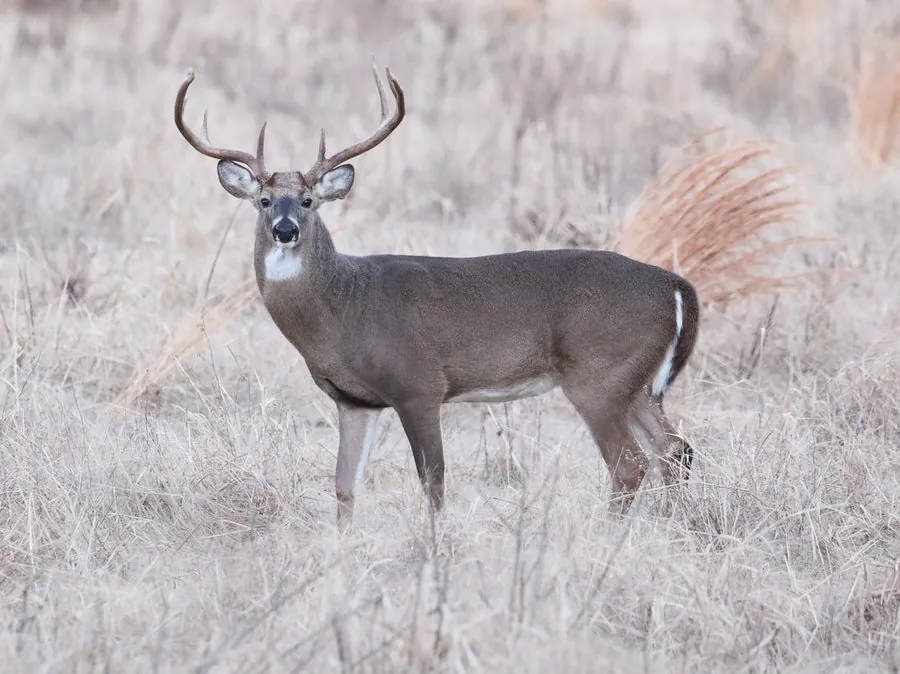

哺乳动物 · 动物界
黇鹿 Dama dama

欧洲和地中海地区的鹿类，夏季毛色红棕带白斑、冬季转灰褐，雄鹿角呈掌状，常被引入各地狩猎场和庄园。
- 分类
- 门脊索动物门纲哺乳纲目偶蹄目科鹿科属黇鹿属
- 栖息环境
- 阔叶林、混交林与草原，常被引入庄园和狩猎场
- 地理分布
- 原产地中海沿岸和小亚细亚，现被引入欧洲各地及世界多国
- 保护级别
- IUCN 无危（LC）
物种志
黇鹿体长 1.4–1.9 米，肩高 0.8–1.1 米，体重 40–120 kg，雄性大于雌性。它的夏季被毛为红棕色并布满白色斑点，冬季转为灰褐色、斑点变淡；雄鹿的角基部呈圆柱形，上部分叉呈掌状，角长可达 60–80 cm。
黇鹿原产于地中海沿岸和小亚细亚，后被引入欧洲其他地区和世界各地，栖息于阔叶林、混交林和草原。它以草、树叶、嫩枝和果实为食，结成雌鹿群和幼鹿群，雄鹿在繁殖季用掌状角争夺配偶，并发出响亮的吼声。黇鹿多在晨昏活动，善奔跑和跳跃。雌性妊娠期约 8 个月，每胎 1 仔。黇鹿在原产地之外多为引入种，种群总体稳定，被列为无危。
形态与习性
- 食性草、树叶、嫩枝与果实
- 体长1.4–1.9 m，肩高 0.8–1.1 m
- 体重40–120 kg，雄性大于雌性
- 寿命野外约 12–16 年
- 繁殖妊娠期约 8 个月，每胎 1 仔
- 鹿角上部呈掌状分叉，长可达 60–80 cm
- 毛色夏毛红棕带白斑，冬毛灰褐斑点变淡
趣味知识
- 黇鹿的角上部呈掌状分叉，与其他鹿类明显不同。
- 夏季黇鹿的红棕色毛上布满白斑，冬季则转为灰褐色。
- 它原产于地中海沿岸，后被引入世界多国。
- 繁殖季雄鹿会发出响亮的吼声争夺配偶。